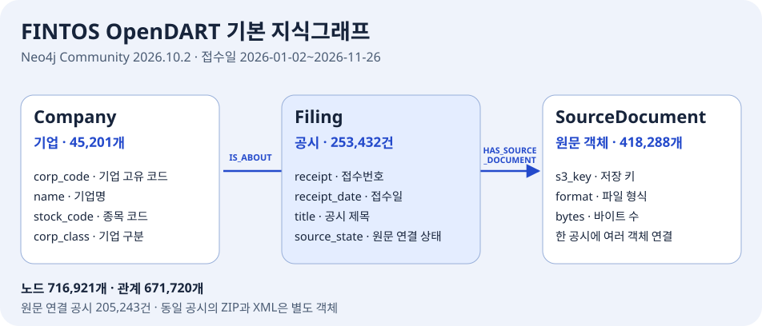
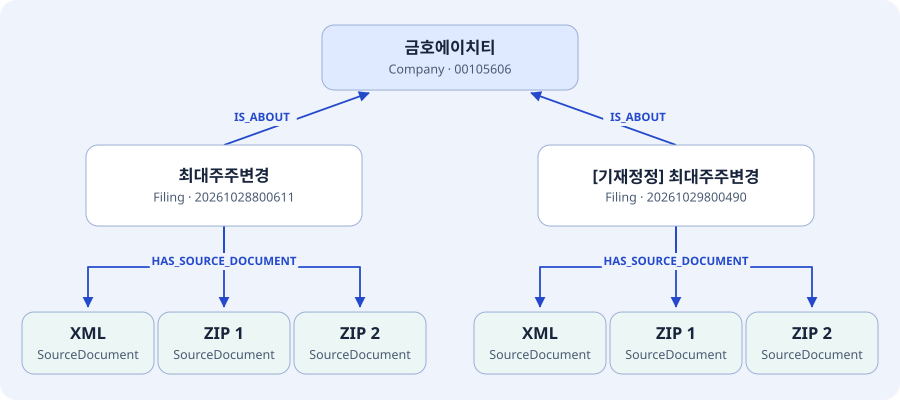
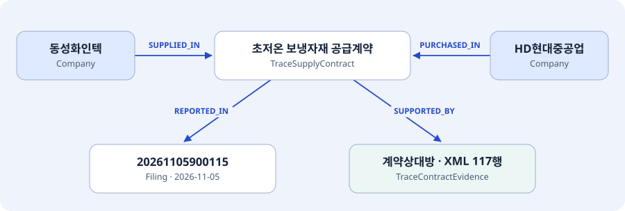

OpenDART 공시 지식그래프
기업별 공시를 접수일 순으로 따라가고, 각 공시의 원문을 찾아갈 수 있는 그래프입니다. 공시 목록과 S3에 확보한 ZIP·XML을 접수번호로 연결했습니다.
- 공시
- 253,432건
- 기업
- 45,201개
- 원문 연결 공시
- 81.0%
공시에서 공급 관계를 읽는 법
공급계약 공시에는 기업 이름뿐 아니라 누가 공급하는지, 상대는 누구인지, 무엇을 얼마에 공급하는지가 담겨 있습니다. FINTOS는 이 내용을 계약별로 연결합니다. 같은 회사의 시설투자와 실적도 함께 조회할 수 있어, 거래의 규모와 사업 맥락을 살펴볼 수 있습니다.
대상은 코스피·코스닥·코넥스 상장 기업입니다. 2026년 1월 1일~11월 26일 범위의 공시에서 공급계약 1,294건, 계약 조건 정정 83건, 시설투자 발표 37건, 매출·영업이익 관측값 2,160개를 EC2의 Neo4j에 적재했습니다. 공급계약 226건은 공시일에 확인할 수 있었던 구매자 기업 코드와 연결했습니다. 삼성전자와 SK하이닉스는 관계를 설명하는 사례입니다.

계약 당사자와 품목을 찾는 Cypher 예제
MATCH (supplier:Company)-[:SUPPLIED_IN]->(contract:SupplyContract {receipt:'20261006900146'})
<-[:PURCHASED_IN]-(buyer:Company)
MATCH (contract)-[:HAS_TERMS_OBSERVATION]->(terms:ContractTermsObservation)
MATCH (contract)-[:COVERS_PRODUCT]->(product:ProductCategory)
WHERE terms.known_on <= date('2026-10-06')
RETURN supplier.name AS supplier, buyer.name AS buyer,
contract.product AS item, product.name AS category,
terms.contract_amount_krw AS amount_krw,
terms.supplier_reported_sales_pct AS sales_pct;정정 조회 예시. 이노메트리의 2차전지 검사장비 공급계약은 2월 23일 기준으로 종료일이 3월 1일이었습니다. 2월 24일 공시에서 종료일이 7월 15일로 바뀌었습니다. Neo4j는 두 값을 각각의 공개일과 함께 보존하며 두 번째 관측은 종료일만 기록합니다. 원공시 · 정정 공시
질문에서 그래프와 실험까지
| 단계 | 수행 방법 | 완료 기준 |
|---|---|---|
| 1. 질문을 정한다 | 누가 누구에게 무엇을 공급하는가? 계약은 공급자 매출 대비 얼마나 큰가? 그날까지 어떤 계약 조건을 알 수 있었는가? 같은 구매자나 제품군을 통해 어떤 기업들이 연결되는가? | 질문별로 필요한 원문 항목과 답변을 보류할 조건을 정한다. |
| 2. 원문을 검수한다 | 초기 추출분인 공급계약 1,200건과 구매자 연결 후보 210건에서 출발한다. 30~40건의 검수 표본에 구매자가 공개된 계약, 구매자 비공개, 자회사 대신 제출한 공시, 계약의 일부 조건만 정정한 공시를 포함한다. | 역할·품목·금액·상태의 판정 근거를 기록한다. 규칙을 만든 문서와 처음 보는 평가 문서를 구분한다. |
| 3. 개념과 관계를 정의한다 | 계약은 건별로 식별하고 공급자·구매자 역할과 제품군을 연결한다. 계약 체결일, 공개일, 계약 기간은 각각 기록한다. FIBO의 계약·역할·법인·증권 구분을 참고한다. | 같은 두 기업의 여러 계약, 구매자 미공개, 일부 계약 조건만 정정된 경우를 표현할 수 있다. |
| 4. 추출하고 적재한다 | 공시 표에서 당사자·품목·금액·매출 비율을 추출한다. 원문 품명과 표준 제품군을 함께 보존하고 확인한 관계를 EC2의 Neo4j에 적재한다. | 재적재해도 계약과 관계가 중복되지 않는다. 기준일로 조회할 때 이후 공개된 정정이 포함되지 않는다. |
| 5. 거래를 그림과 질의로 설명한다 | 공급자와 구매자를 계약 양쪽에 놓고 품목·금액·기간을 보여 준다. Cypher로 찾을 수 있는 경로와 그 결과를 설명한다. | 독자가 그림에서 거래 당사자와 공급 대상을 읽고, 필요할 때 원문에서 확인할 수 있다. |
| 6. 실제 관계의 예측 기여를 평가한다 | 같은 종목과 거래일에서 가격만 사용한 모형, 직접 공시를 더한 모형, 거래 관계까지 더한 모형을 비교한다. 관련 기업을 같은 업종의 다른 기업으로 바꾼 비교군도 둔다. | 그래프 추출 성능과 예측 성능을 각각 보고한다. 예측 성능은 규칙 개발에 사용하지 않은 기간에서 측정한다. |
정합성을 지키는 기준
당사자는 공시 제출인과 계약 참여자를 구분합니다. 시점은 접수일과 계약 기간, 재무 회계기간을 따로 둡니다. 수치는 통화·단위·비율의 분모를 보존합니다. 관계는 원문 근거가 있을 때만 만듭니다. 예를 들어 같은 구매자가 시설투자를 발표했더라도, 해당 공급계약을 그 시설과 연결할 때는 공시에 명시된 근거를 확인합니다.
개념과 규칙은 CSV로 명세하고, 계약과 역할은 Neo4j 레이블 속성 그래프(LPG)로 구현합니다. 온톨로지 CSV · 온톨로지 설명서 · 발표자료 PDF · 편집용 PowerPoint
스키마와 규모
FINTOS는 공시 원문과 그래프가 답할 질문을 바탕으로 개념·관계·검증 규칙을 정합니다. CSV는 온톨로지 정의서 형식이며, 실제 데이터는 Neo4j의 레이블 속성 그래프(LPG)로 구현합니다. 노드와 관계에 속성을 저장하고 Cypher로 조회합니다. RDF 내보내기와 SHACL 검증은 후속 실험으로 설계했습니다. 온톨로지 설계 방법과 RDF·OWL의 역할
레이블 속성 그래프(LPG)란?
레이블 속성 그래프(Labeled Property Graph)는 기업이나 계약 같은 대상을 노드로, 대상 사이의 연결을 관계로 표현하는 데이터 모델입니다. 노드에는 Company, SupplyContract 같은 레이블을 붙여 무엇인지 표시합니다. 관계에는 SUPPLIED_IN, PURCHASED_IN 같은 타입과 방향을 두어 어떤 역할로 연결됐는지 나타냅니다. 노드와 관계 모두 이름이나 확인 근거를 키와 값의 쌍인 속성으로 저장할 수 있습니다.
예를 들어 넥스틴과 SK하이닉스는 각각 Company 노드입니다. 두 기업은 같은 SupplyContract 노드에 연결되며, 넥스틴은 공급자, SK하이닉스는 구매자입니다. 계약에 연결된 조건 관측 노드에서 공개일과 금액을 읽을 수 있습니다. Cypher로 이 연결을 따라가면 “SK하이닉스에 무엇을 누가 공급하기로 했나?”라는 질문에 답할 수 있습니다. Neo4j 그래프 데이터 모델

| 노드 라벨 | 개수 | 고유 키와 주요 속성 |
|---|---|---|
Company | 45,201 | corp_code · 기업명, 기업 구분, 종목 코드. 종목 코드가 비어 있는 기업도 있습니다. |
Filing | 253,432 | receipt · 접수일, 제목, 제출인명, 비고, 원문 연결 상태, 목록 파티션. |
SourceDocument | 418,288 | s3_key · 파일 형식과 바이트 수. ZIP 219,278개와 XML 199,010개가 연결됐습니다. |
| 관계 | 방향 | 개수 | 뜻 |
|---|---|---|---|
IS_ABOUT | 공시 → 기업 | 253,432 | OpenDART 목록의 기업 코드와 연결됩니다. |
HAS_SOURCE_DOCUMENT | 공시 → 원문 객체 | 418,288 | 접수번호에 해당하는 S3 파일을 가리킵니다. |
한 공시에 ZIP과 XML이 각각 있을 수 있고, 여러 수집분에서 확보한 ZIP도 별도 객체로 남습니다. 원문 객체 수보다 원문이 연결된 공시 수가 분석 범위를 판단하는 데 적합합니다. 접수번호와 기업 코드는 앞자리 0을 보존하는 문자열이며, 접수일은 Neo4j의 DATE 속성입니다. 고유 키 세 개에 유일성 제약을 두고 접수일에 인덱스를 만들었습니다.
위 집계는 기본 공시 카탈로그의 세 노드 타입과 두 관계 타입을 대상으로 합니다. 공급자·구매자 관계는 별도 실험 라벨을 사용합니다. TRACE 공급계약 파일럿
실제 그래프 샘플
EC2의 Neo4j에서 조회한 노드와 관계를 그렸습니다. 그림의 화살표 방향은 저장된 관계의 방향입니다. 두 샘플의 편집용 draw.io 다운로드
금호에이치티 최대주주 변경과 지분율 정정
원공시는 알에프텍이 에코볼트를 흡수합병하면서 금호에이치티의 최대주주가 에코볼트에서 알에프텍으로 바뀌었다고 설명합니다. 원공시와 정정공시에서 확인한 값은 파일럿 그래프에서 같은 최대주주 변경 사건에 연결됩니다. 10월 28일 원공시 · 10월 29일 정정 공시
| 원문에서 읽은 항목 | 10월 28일에 확인 가능한 값 | 10월 29일에 확인 가능한 값 | 그래프의 연결 |
|---|---|---|---|
| 변경 후 최대주주등 지분율 | 52.25% · 원공시 표 1, 행 6, 셀 2 | 52.39% · 정정공시 표 4, 행 6, 셀 2 | 정정된 지분율이 같은 사건의 원래 지분율을 대체합니다(SUPERSEDES). |
| 공시가 보고한 변경일 | 2026-10-27 · 원공시 표 1, 행 11, 셀 2 | 2026-10-27 · 같은 원공시 셀 | 변경일은 같은 사건에 관한 별도 주장입니다(ABOUT_EVENT). |
각 주장은 해당 값을 보고한 공시(ASSERTED_IN)와 값을 읽은 표 셀(SUPPORTED_BY)에 연결됩니다. 표 셀은 다시 자신이 속한 문서 버전(LOCATED_IN)으로 이어집니다. 따라서 10월 29일 기준으로 지분율과 변경일을 함께 물으면, 두 값의 출처가 서로 다른 공시로 돌아옵니다. 최대주주 이름과 합병은 원문에 나온 맥락이며, 위 파일럿에서 조회한 항목은 지분율과 변경일입니다.
최대주주 변경 파일럿에서 주장과 원문 근거를 조회하는 Cypher
MATCH (a:ControllerDemoAssertion)-[:ABOUT_EVENT]->
(event:ControllerDemoEvent {id:'demo:20261028800611'})
MATCH proof = (a)-[:SUPPORTED_BY]->(cell:ControllerDemoEvidence)
-[:LOCATED_IN]->(document:ControllerDemoDocument)
MATCH (a)-[:ASSERTED_IN]->(filing:ControllerDemoFiling)
OPTIONAL MATCH correction = (a)-[:SUPERSEDES]->(:ControllerDemoAssertion)
RETURN event, a.field AS field, a.value AS value,
filing.receipt AS receipt, cell.locator AS source, proof, correction
ORDER BY filing.receipt_date, field;기본 카탈로그의 ZIP·XML 파일 연결 그림

기본 카탈로그에서 공시 파일을 확인하는 Cypher
MATCH company_path = (c:Company {corp_code:'00105606'})
<-[:IS_ABOUT]-(f:Filing)
MATCH source_path = (f)-[:HAS_SOURCE_DOCUMENT]->(:SourceDocument)
WHERE f.receipt IN ['20261028800611', '20261029800490']
RETURN company_path, source_path;동성화인텍과 HD현대중공업의 공급계약

동성화인텍은 공급자, HD현대중공업은 구매자로 연결됩니다. 구매자 이름은 공시 XML 117행에서 확인했습니다. 공급계약 원문 · TRACE 연구 기록
Neo4j Browser에서 그래프로 조회하는 Cypher
MATCH supplier_path = (:Company)-[:SUPPLIED_IN]->
(k:TraceSupplyContract {receipt:'20261105900115'})
MATCH buyer_path = (:Company)-[:PURCHASED_IN]->(k)
MATCH filing_path = (k)-[:REPORTED_IN]->(:Filing)
MATCH evidence_path = (k)-[:SUPPORTED_BY]->(:TraceContractEvidence)
RETURN supplier_path, buyer_path, filing_path, evidence_path;데이터 수집과 구축 리소스
OpenDART의 과거 수집분과 EC2 일일 수집분을 S3에서 읽었습니다. 접수번호로 공시 목록을 합치고, S3 객체 목록에서 접수번호가 맞는 원문을 연결했습니다. 노드·관계 CSV를 만든 뒤 EC2의 별도 Neo4j Community 데이터베이스에 일괄 적재했습니다. OpenDART 공시검색 · 카탈로그 변환 코드
| 항목 | 구성·측정값 |
|---|---|
| 실행 환경 | EC2 m6i.xlarge · 4 vCPU / 16GiB · EBS 100GiB · Neo4j Community 2026.10.2 |
| 일괄 적재 | CSV 준비 후 약 7.6초. 목록 수집, CSV 변환, 인덱스 생성은 별도 작업입니다. |
| 파일 크기 | Neo4j 데이터 디렉터리 약 882MiB, 적재 CSV 약 150MiB. |
| 조회 중 메모리 | Neo4j 컨테이너 약 1.16GiB. 컨테이너 상한 4GiB. GPU·LLM 호출 없이 구축했습니다. |
검수에서는 고유 키 세 종류를 전수 대조하고, 모든 공시의 기업 연결과 모든 원문 객체의 공시 연결을 확인했습니다. 공시 제목의 앞뒤 공백을 정리한 뒤 같은 조회를 다시 실행했습니다.
일일 수집은 S3 원천을 갱신합니다. 이 Neo4j 그래프는 고정 스냅샷으로, 새 공시가 자동으로 반영되는 그래프 배치는 아직 연결하지 않았습니다. 수집 운영 문서
EC2에서 실행한 Cypher와 결과
아래 표는 기본 공시 카탈로그를 직접 조회한 값입니다. 실제 공시는 접수번호를 눌러 DART에서 읽을 수 있습니다. 전체 예제 질의 다운로드
금호에이치티의 원공시와 정정 공시를 함께 찾을 수 있나?
실행한 Cypher 보기
MATCH (f:Filing)-[:IS_ABOUT]->(c:Company {corp_code:'00105606'})
WHERE f.receipt IN ['20261028800611','20261029800490']
OPTIONAL MATCH (f)-[:HAS_SOURCE_DOCUMENT]->(d:SourceDocument)
RETURN c.name AS company,f.receipt_date AS receipt_date,f.receipt AS receipt,f.title AS title,count(d) AS source_objects
ORDER BY receipt_date,receipt;| 접수일 | 제목 | 접수번호 | 원문 객체 |
|---|---|---|---|
| 2026-10-28 | 최대주주변경 | 20261028800611 | 3 |
| 2026-10-29 | [기재정정]최대주주변경 | 20261029800490 | 3 |
정정 공시에 연결된 파일 세 개는 XML 한 개와 ZIP 두 개였습니다. 이 질의는 같은 기업의 지정 공시 두 건을 찾습니다. 항목별 정정 전후 수치를 비교한 과정은 별도의 파일럿에서 확인할 수 있습니다. 정정 공시 파일럿
최근 최대주주 변경 관련 공시 후보는 무엇인가?
실행한 Cypher 보기
MATCH (f:Filing)-[:IS_ABOUT]->(c:Company)
WHERE f.receipt_date >= date('2026-11-24')
AND f.receipt_date <= date('2026-11-26')
AND replace(f.title,' ','') CONTAINS '최대주주변경'
RETURN f.receipt_date AS receipt_date,c.name AS company,f.title AS title,f.receipt AS receipt,f.source_state AS source_state
ORDER BY receipt_date DESC,receipt LIMIT 5;| 접수일 | 기업 | 공시 제목 | 접수번호 |
|---|---|---|---|
| 2026-11-26 | 셀레믹스 | [기재정정]최대주주변경을수반하는주식담보제공계약체결 | 20261126900479 |
| 2026-11-26 | 셀레믹스 | [기재정정]최대주주변경을수반하는주식담보제공계약체결 | 20261126900533 |
| 2026-11-26 | 셀레믹스 | [기재정정]최대주주변경을수반하는주식담보제공계약체결 | 20261126900606 |
| 2026-11-26 | 드림인사이트 | [기재정정]최대주주변경을수반하는주식양수도계약체결 | 20261126900725 |
| 2026-11-25 | 다보링크 | [기재정정]최대주주변경을수반하는주식양수도계약체결 | 20261125900452 |
반환된 5건 모두 S3 원문 객체가 연결돼 있습니다. 제목이 같은 셀레믹스 공시 3건은 접수번호가 각각 다릅니다. 후보를 실제 변경 사건으로 연결하려면 원문에서 대상 계약, 완료 여부, 정정 대상 등을 확인해야 합니다.
어느 달의 원문이 연결돼 있나?
실행한 Cypher 보기
MATCH (f:Filing)
WITH substring(toString(f.receipt_date),0,7) AS month, f
RETURN month,count(*) AS filings,count(CASE WHEN f.source_state='available' THEN 1 END) AS linked
ORDER BY month;| 접수월 | 공시 | 원문 연결 공시 | 연결률 |
|---|---|---|---|
| 2026-01 | 14,561 | 11,500 | 79.0% |
| 2026-02 | 25,365 | 22,747 | 89.7% |
| 2026-03 | 42,117 | 34,269 | 81.4% |
| 2026-04 | 51,071 | 48,263 | 94.5% |
| 2026-05 | 19,365 | 17,282 | 89.2% |
| 2026-06 | 18,076 | 15,955 | 88.3% |
| 2026-07 | 17,444 | 14,951 | 85.7% |
| 2026-08 | 23,061 | 13,979 | 60.6% |
| 2026-09 | 12,962 | 0 | 0.0% |
| 2026-10 | 13,951 | 11,923 | 85.5% |
| 2026-11 | 15,459 | 14,374 | 93.0% |
| 합계 | 253,432 | 205,243 | 81.0% |
연결률은 이 스냅샷에서 S3 원문 객체가 하나 이상 연결된 공시를 전체 공시로 나눈 값입니다. 추출 실험에 쓸 문서를 고를 때는 분석 기간과 함께 이 비율을 확인합니다.
전체 원문 상태 집계
| 원문 상태 | 공시 수 | 의미 |
|---|---|---|
available | 205,243 | S3 객체가 하나 이상 연결된 공시 |
not_in_object_inventory | 47,385 | 이 스냅샷의 S3 객체 목록에서 원문이 연결되지 않은 공시 |
unavailable | 804 | 수집 기록에서 원문 미제공으로 분류한 공시 |
활용 범위와 업데이트
- 공시 탐색 · 기업 코드와 기간으로 공시를 찾고, 접수번호에서 공개 원문으로 이동할 수 있습니다.
- 원문 추출 실험 준비 · 제목으로 정정·계약·지분 공시 후보를 고르고, 원문 연결 상태를 기준으로 검수 표본을 만들 수 있습니다.
- 수집 품질 확인 · 원문을 찾지 못한 월과 공시를 골라 로컬·S3·API 상태를 대조할 수 있습니다.
현재 그래프에서 확인할 수 있는 것은 기업·공시·원문 사이의 연결입니다. 지분율, 계약 당사자, 정정 전후 값은 원문을 파싱하고 검수한 뒤 별도 관계로 적재해야 합니다. 접수일은 사건이 실제 일어난 날짜와 구분해야 하며, 일중 공개 순서는 이 스냅샷에서 확인할 수 없습니다.
공개 페이지에서는 스키마, 질의문, 일부 공개 접수번호와 집계값을 제공합니다. 전체 원문, S3 접근 경로, 내부 Neo4j 접속 정보는 EC2 운영 환경에서 관리합니다.
설명서 작성에 참고한 자료
목적·수집 과정·활용·갱신 방식은 Datasheets for Datasets의 항목을, 데이터 크기·관계별 통계·대표 사례는 W3C VoID의 설명 방식을 참고했습니다. 코드와 실제 반환값을 나란히 두는 구성에는 Wikidata의 데이터 접근 안내를 참고했습니다. Datasheets for Datasets · W3C VoID · Wikidata 데이터 접근 안내